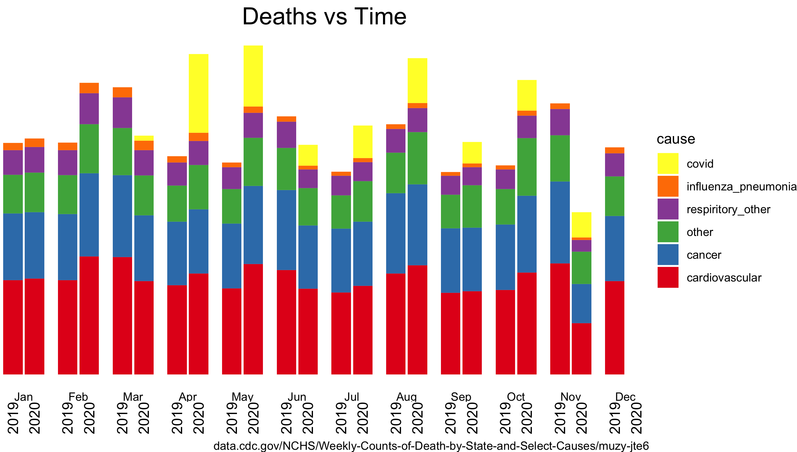

graph03
November 2020, I graphed some CDC death data and catagorized the most common types of death.
Monthly COVID deaths are compared to previous year's mortality; the CDC data was taken mid-November 2020.
library(tidyverse) library(magrittr) library(lubridate) library(RColorBrewer) ## Import Data ## 2019 - 2020 d20a <- read_csv("/Users/nvence/prog/COVID-19/data_CDC/Weekly_Counts_of_Deaths_by_Select_Causes__2019-2020.csv", na = "") %>% transmute(date = as_date(`Week Ending Date`), covid = `COVID-19 (U071, Underlying Cause of Death)`, cancer = `Malignant neoplasms (C00-C97)`, influenza_pneumonia = `Influenza and pneumonia (J09-J18)`, respiritory_other = `Chronic lower respiratory diseases (J40-J47)` + `Other diseases of respiratory system (J00-J06,J30-J39,J67,J70-J98)`, cardiovascular = `Diseases of heart (I00-I09,I11,I13,I20-I51)` + `Cerebrovascular diseases (I60-I69)`, other = `Symptoms, signs and abnormal clinical and laboratory findings, not elsewhere classified (R00-R99)` + `Nephritis, nephrotic syndrome and nephrosis (N00-N07,N17-N19,N25-N27)` + `Septicemia (A40-A41)` + `Alzheimer disease (G30)` + `Diabetes mellitus (E10-E14)`) %>% ## Change time resolution: month mutate(year = factor(year(date)), month = factor(month(date, label = TRUE))) %>% select(year, month, covid:other) %>% group_by(year,month) %>% summarise_all(sum) %>% #sum over weeks ungroup() ### FIGURE 1 ### ## Format Data d20b <- d20a %>% pivot_longer(covid:other, names_to = "cause", values_to = "deaths", names_transform = list( cause = ~ readr::parse_factor(.x, levels = rev(c("cardiovascular", "cancer", "other", "respiritory_other", "influenza_pneumonia", "covid")), ordered = TRUE) )) ## Bar Chart ggplot(d20b, aes(x=year, y=deaths, fill = cause)) + geom_bar(stat = "identity") + facet_wrap(~month, nrow = 1, strip.position="bottom") + scale_fill_brewer( palette = "Set1", direction = -1) + labs(caption = "data.cdc.gov/NCHS/Weekly-Counts-of-Death-by-State-and-Select-Causes/muzy-jte6", title = "Deaths vs Time") + theme_void() + theme(axis.text.x = element_text(angle = 90), plot.title = element_text(hjust = 0.5, size = 18)) + ggsave("/Users/nvence/prog/COVID-19/data_CDC/bar_chart.png")